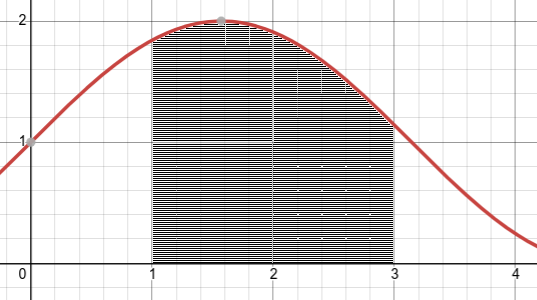
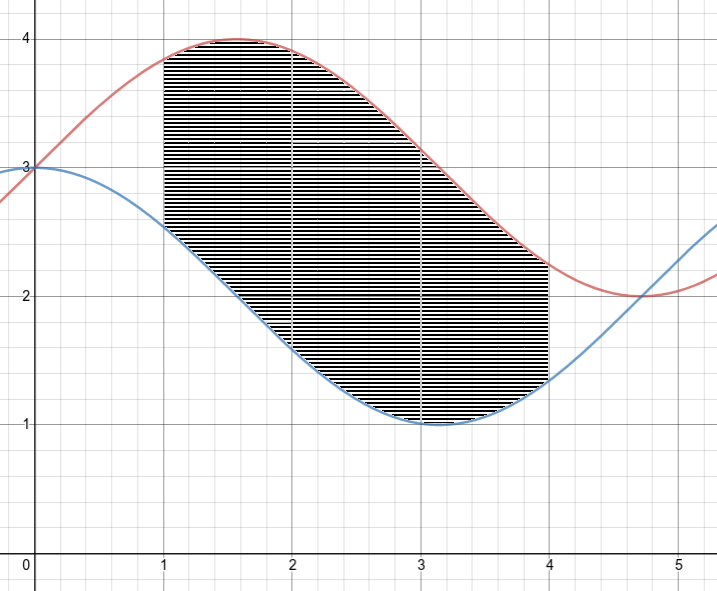
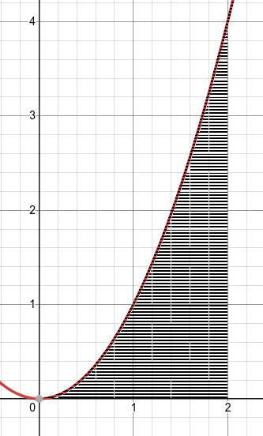

Section 1.2 Volumes by Slicing

Subsection 1.2.1 Volumes of Solids of Revolution -- Disk Method
If we cut the previous graph up into small, evenly spaced verticle strips, and rotate them around the x-axis, we would get a series of disks. The equation for the volume of a disk is \(V_{disk}=\pi r^2 h\text{.}\) We can apply this to our graph by using the following:
\(r=f(x_k^*)\) where \(f(x_k^*)\) is the height of each individual "strip"
\(h=\Delta x\) where \(\Delta x \) is the width of each individual "strip"
This gives us the equation: \(V_{n,disk}=\pi(f(x_k^*))^2 \Delta x\)
So how do we find the total volume of all disks?
To find the exact volume of a solid of revolution, we must take the limit of the above equation, turning this into a definite integral.
Example 1.2.2. Volume Using Disk Method.
Let's find the volume of the function \(y=\sqrt{x}\) from 1 to 9 revolved about the x-axis:
Subsection 1.2.2 Volumes of Solids of Revolution -- Washer Method

Similarly to the disk method, we need to cut up the functions into even subintervals. In this case though, when we revolve these subintervals around the x-axis, we end up with a washer instead of a disk.
What is the volume of the washer? We can think of it as the volume of a larger disk minus the volume of a smaller disk.
\(r_1\) = radius of big disk
\(r_2\) = radius of small disk
\(\displaystyle V_{washer} = \pi r_1^2 h - \pi r_2^2 h \)
\(\displaystyle V_{washer} = \pi \left( r_1^2 - r_2^2 \right) h \)
Now, we need to convert the variables to our equation to find the total volume:
\(\displaystyle r_1 = f(x_k^*)\)
\(\displaystyle r_2 = g(x_k^*)\)
\(\displaystyle h=\Delta x\)
So, \(V_n = \pi \left( (f(x))^2 -(g(x))^2 \right) \Delta x\)
Finally, the exact volume:
Example 1.2.4. Volume Using Washer Method.
Let's set up the integral to find the volume of the image above revolved around the x-axis. The area is bound above by \(f(x)=sin(x)+3\text{,}\) below by \(g(x)=cos(x)+2\text{,}\) to the left by \(x = 1\text{,}\) and the right by \(x = 4\text{.}\)
Subsection 1.2.3 Volumes of Solids of Revolution -- Shell Method

If we "peel" open this shell, we roughly get a box shaped like a stick of gum. We can find the volume of the box by using the equation: \(V_{shell} \approx V_{box} = l \cdot w \cdot h\text{.}\) Now we need to changes this equations into terms of the fucntion:
\(w = \Delta x\) (the thickness of the shell)
\(l = 2 \pi r = 2 \pi x\) (r is equal to x -- this becomes the radius)
\(h = f(x)-g(x) \) (the distance between the two function)
So, \(V_{shell} \approx 2 \pi x \left(f(x) - g(x)\right)\Delta x \)
Now the only thing left to do is to plug this into a definite integral:
Example 1.2.6. Volume Using Shell Method.
Let's set up the integral to find the volume of the image above revolved around the y-axis. The area is bound above by \(f(x)=x^2\text{,}\) on the left by \(x=0\text{,}\) and on the right by \(x=2\text{.}\)